Обзор
Редактор ландшафта используется для изменения ландшафта на текущем уровне. С помощью этого инструмента можно создавать горы, долины и все, что связано с местностью. Пользователи также могут назначать текстуры и материалы ландшафту, чтобы он выглядел как любая поверхность, подходящая для текущего проекта.
По умолчанию редактор ландшафта отображается в правой части Sandbox, но его также можно открыть через Инструменты → Редактор ландшафта.
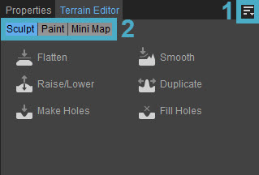
В настоящее время в редакторе ландшафта есть три режима редактирования, а именно:
- Лепить
- Краска
- Мини-карта
Эти режимы манипулируют различными аспектами местности, и пользователи могут достигать уникальных результатов, комбинируя их.
Макет редактора ландшафта по умолчанию состоит из следующих основных разделов:
1. Меню
Меню всегда одинаково, независимо от того, какой режим редактирования активен, и его можно отобразить, щелкнув значок 
Файл
Вариант | Описание |
|---|---|
Создать текстуру местности... | Генерирует текстуру местности, которая будет использоваться в игровом режиме. Эта опция генерирует только текстуру оттенка, а не слои материала. Когда Создать текстуру местности... выбран, отобразятся следующие параметры:
|
Создать ландшафт... | Случайным образом создает ландшафт в зависимости от нескольких параметров. Параметры, которые можно изменить:
|
Импортировать карту высот... | Позволяет пользователям импортировать изображение, которое будет использоваться в качестве новой карты высот. Размер карты высот должен быть равен или меньше разрешения карты высот текущего уровня. Поддерживаются следующие файлы:
|
Экспортировать карту высот... | Используйте эту опцию, чтобы экспортировать файл карты высот для редактирования в Photoshop (требуется версия CS1+). Поддерживаются следующие файлы:
|
Импортировать блок местности... | Импортирует блок местности, включая растительность на нем. |
Экспортировать блок местности... | Экспортирует блок местности, включая растительность на нем. |
Экспортная зона местности... | Экспортирует область местности как .obj файл, который можно открыть в другом 3D-программном обеспечении. |
Экспортировать область местности с объектами... | Экспортирует область местности, включаяg объекты на нем как а .obj файл, который можно загрузить в другое 3D-программное обеспечение. |
Экспорт/импорт текстуры местности... | Экспортирует и импортирует текстуру местности выбранной плитки или плиток. тместность можно разделить на плитки, выбрав Редактор ландшафта → Редактировать → Уточнить текстуры ландшафта. |
Импортировать слои... | Импортирует настроенные и экспортированные слои. |
Экспортировать слои... | Экспортирует слои, настроенные в Краска режим. |
Редактировать
Вариант | Описание |
|---|---|
Выберите местность | Позволяет пользователям выбирать часть местности. |
Сделать остров | Понижает текущую карту высот. |
Удалить океан | Устанавливает уровень воды на -100000. |
Установить высоту океана | Эта функция регулирует уровень воды. Уровень по умолчанию составляет 16 метров. |
Установить максимальную высоту ландшафта | Изменение этого значения изменит высоту самой высокой горы. Высота по умолчанию — 1024. |
Сгладить (Светлый) | Сглаживает ландшафт до самой высокой или самой низкой точки. |
Сгладить (тяжелый) | Сглаживает ландшафт до самой высокой или самой низкой точки. |
Гладкий | Удаляет резкие края на всей местности. |
Плавный склон | Удаляет острые края на крутых участках. |
Гладкий пляж/побережье | Удаляет острые края с плоских участков. |
Нормализовать | Обеспечивает использование всего спектра оттенков серого. Самая высокая точка — это точка, указанная в максимальной высоте, а самая низкая точка — 0. |
Уменьшить дальность (свет) | Делает горы меньше. |
Уменьшить дальность (тяжелый) | Делает горы меньше. |
Стереть местность | Эта опция удалит текущие данные карты высот. |
Изменение размера ландшафта | Повторно открывает начальную панель создания карты высот для настройки разрешения карты высот и масштаба в метрах на единицу. |
Инвертировать карту высот | Меняет черный цвет на белый на карте высот. |
Перезагрузить местность | Перезагружает местность. |
Уточнение текстуры местности | Делит плитки местности на более мелкие секции. |
Настройки кисти... | Открывает панель «Настройки кисти», где пользователи могут изменять кисть редактора ландшафта.
Кроме того, пользователи могут настроить значения чувствительности, прокручивая вверх или вниз при использовании Alt + LMB функция, которая описана в Режим скульптуры → Кисть раздел ниже. |
Панели инструментов
| Вариант | Описание | ||||
|---|---|---|---|---|---|
| Настроить | Открывает окно настройки панели инструментов, позволяющее пользователям создавать новые панели инструментов в окне редактора ландшафта. | ||||
| Блокировка панелей инструментов | Если этот параметр отключен, положения панелей инструментов и разделителей в окне редактора ландшафта можно изменить путем перетаскивания. | ||||
| Проставки | Следующие параметры позволяют пользователям использовать разделители при позиционировании панелей инструментов.
Проставки Опции меню доступны только тогда, когда Панели инструментов → Заблокировать панели инструментов отключен. | ||||
| Панели инструментов | Перечисляет все стандартные и пользовательские панели инструментов, созданные для редактора ландшафта, что позволяет вам выбрать, какую панель инструментов вы хотите скрыть или отобразить. |
Если у инструмента есть панель инструментов, будь то панель по умолчанию или пользовательская, приведенные выше параметры также доступны при щелчке правой кнопкой мыши в области панели инструментов (только если панель инструментов уже отображается).
Слои
Sandbox использует слои по двум основным причинам: организация контента вашего уровня и производительность потоковой передачи.
Любой объект, который вы размещаете на слое (за исключением растительности/рельефа), можно скрыть/показать с помощью элемента управления слоем, а также с помощью Flowgraph, который позволяет загружать/выгружать области уровня, чтобы поддерживать высокую производительность и низкое потребление памяти.
Вариант | Описание |
|---|---|
Создать слой | Создает новый слой на вкладке Paint. |
Удалить слой | Удаляет выбранный слой с вкладки «Рисование». |
Дублировать слой | Дублирует выбранный слой и помещает его над исходным слоем. |
Перейти наверх | Перемещает выбранный слой в начало списка слоев. |
Двигаться вверх | Перемещает выбранный слой на одну позицию вверх в списке. |
Вниз | Перемещает выбранный слой на одно место в списке вниз. |
Переместиться вниз | Перемещает выбранный слой в конец списка слоев. |
Слой затопления | Красит весь ландшафт выбранным слоем текстуры ландшафта. |
Инструменты
Меню «Инструменты» обеспечивает быстрый доступ ко всем инструментам модификации ландшафта в режиме скульптуры, а также возможность переключиться в режим рисования для изменения любых текстур/материалов, назначенных ландшафту.
Помощь
Открывает страницу документации для этого инструмента.
2. Режимы
Режим скульптуры
Режим скульптуры включается по умолчанию при открытии редактора ландшафта.
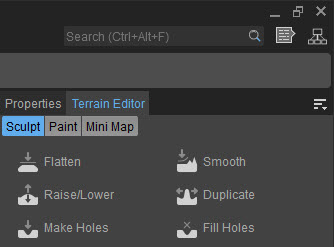
В этом режиме можно изменять высоту ландшафта различными способами, например, сглаживать его, поднимать/опускать, делать дыры, сглаживать, дублировать и заполнять дыры.
Сгладить
Когда Сгладить при нажатии кнопки появляются следующие опции:
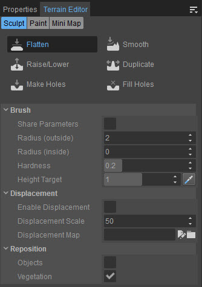
Раздел | Опции | ||||||||||||||||
|---|---|---|---|---|---|---|---|---|---|---|---|---|---|---|---|---|---|
Кисть |
Выбрать кнопка рядом с Высота цели value позволяет пользователям выбирать значение высоты непосредственно из ландшафта в видовом экране. | ||||||||||||||||
| Смещение | Здесь можно выбрать и использовать карту смещения. Это позволяет пользователям рисовать с помощью текстурной карты, например множественной фотограмметрии или готовых карт смещения, для быстрого создания детального ландшафта.
| ||||||||||||||||
| Переместить |
|
Поднять/Опустить
Если этот режим включен, местность можно поднимать или опускать. Это основной инструмент для моделирования ландшафта, позволяющий пользователям создавать горы, озера и свободно изменять ландшафт.
Когда Поднять/Опустить при нажатии кнопки появляются те же параметры, что и выше, за исключением Выбрать кнопка:
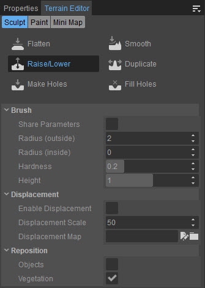
| Раздел | Вариант | ||||||||||||
|---|---|---|---|---|---|---|---|---|---|---|---|---|---|
| Кисть |
| ||||||||||||
| Смещение | Здесь можно выбрать и использовать карту смещения. Это позволяет пользователям рисовать с помощью текстурной карты, например множественной фотограмметрии или готовых карт смещения, для быстрого создания детального ландшафта.
| ||||||||||||
| Переместить |
|
Сделать отверстия
Этот режим позволяет пользователям вырезать дыры в местности. Это не то же самое, что понижение рельефа; вместо того, чтобы раскапывать местность до тех пор, пока она не окажется ниже уровня океана, он фактически вырезает из местности квадратный кусок. Его можно использовать для создания входов в пещеры или выступов скал, построенных с помощью сеток.
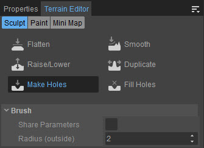
В этом режиме только Кисть доступны варианты:
Вариант | Описание |
|---|---|
Параметры общего доступа | Устанавливает значения кисти, такие как внутренний/внешний радиус, которые будут применяться ко всем инструментам в редакторе ландшафта. Снимите флажок, чтобы снова сделать эти значения независимыми. |
Радиус (внешний) | Изменяет размер кисти. Внешний радиус также можно отрегулировать, удерживая Alt+LMB и перемещая мышь влево и вправо. Скорость изменения внешнего радиуса при этом определяется в настройках. |
Гладкий
Гладкий Режим позволяет пользователям создавать плавные края ландшафта, делая изменение высоты более постепенным.
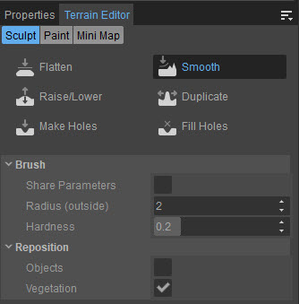
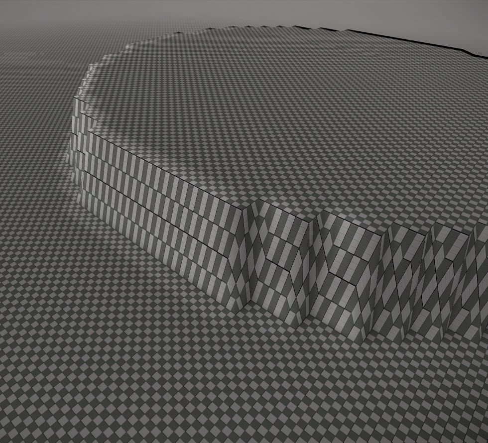 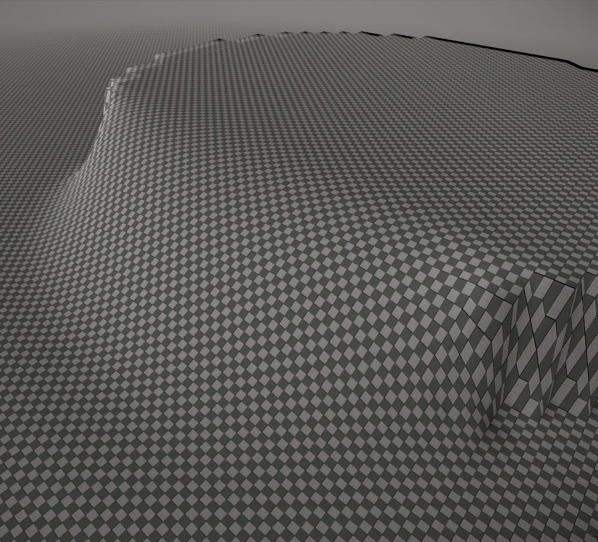
Рельеф до и после сглаживания
| Раздел | Описание | ||||||||
|---|---|---|---|---|---|---|---|---|---|
| Кисть |
| ||||||||
| Переместить |
|
Дублировать
Этот режим позволяет пользователю дублировать одну область карты в другую на основе полей «Источник» и «Цель».
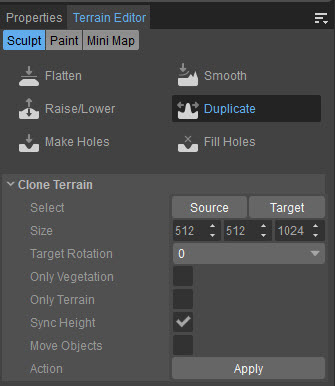
Этот режим имеет следующие Клонировать местность варианты:
Вариант | Описание |
|---|---|
Выбрать |
|
Размер | Определяет размер полей «Источник» и «Цель». |
Целевое вращение | Поворачивает местность в поле «Цель» на 0/90/180/270 градусов против часовой стрелки. |
Только растительность | Копирует только растительность в Источник в поле «Цель» и оставляет местность такой, какая она есть. |
Только местность | Копирует только ландшафт из поля «Источник» в поле «Цель». |
Синхронизация высоты | Синхронизирует высоту полей «Источник» и «Цель», чтобы они всегда находились на одной и той же высоте, независимо от высоты местности. |
Переместить объекты | Перемещает объекты на местности из поля «Источник» в поле «Цель» вместо их копирования. Использование этой опции приведет к исчезновению объектов в поле «Источник». |
Действие |
|
Заполнить дыры
Заполнить дыры является противоположностью Make Holes. Единственная цель этого режима — закрыть отверстия, сделанные в режиме «Сделать отверстия».
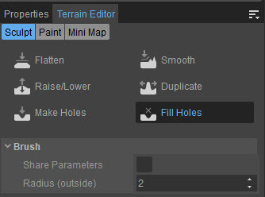
Этот режим имеет те же две опции, что и Сделать отверстия режим:
Вариант | Описание |
|---|---|
Параметры общего доступа | Устанавливает значения кисти, такие как внутренний/внешний радиус, которые будут применяться ко всем инструментам в редакторе ландшафта. Снимите флажок, чтобы снова сделать эти значения независимыми.. |
Радиус | Изменяет размер кисти. Внешний радиус также можно отрегулировать, удерживая Alt+LMB и перемещая мышь влево и вправо. Скорость изменения внешнего радиуса при этом определяется в настройках. |
Режим рисования
Режим рисования позволяет пользователям изменять текстуры и материалы местности, делая ее похожей на желаемую поверхность. По умолчанию — шахматная доска, но этот материал можно заменить любым .mtl файл.
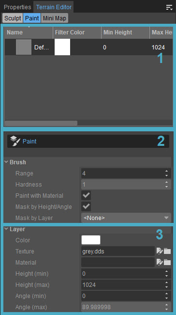
Режим Paint состоит из трех разделов:
- Окно слоев
- Параметры кисти
- Параметры слоя
Окно слоев
В окне «Слои» можно найти слои, нарисованные на местности на уровне. Их можно переименовать, нажав double на поле их имени. Щелчок правой кнопкой мыши в любом месте окна «Слои» откроет контекстное меню со следующими параметрами:
Вариант | Описание |
|---|---|
Создать слой (ниже) | Создает новый слой под текущим выбранным слоем в окне слоев. Щелкните правой кнопкой мыши под последним слоем и выберите Создать слой Опция также создает новый слой под выбранным слоем. |
Удалить слой | Удаляет выбранный слой. |
Дублировать слой | Делает копию выбранного слоя. |
Перейти наверх | Перемещает выбранный слой на самый верхний уровень списка. |
Двигаться вверх | Перемещает выбранный слой на один уровень вверх в списке. |
Вниз | Перемещает выбранный слой на один уровень вниз. |
Переместиться вниз | Перемещает выбранный слой в конец списка. |
Слой затопления | Заполняет слой в соответствии с параметрами, установленными в параметрах слоя. |
Порядок слоев также можно изменить путем перетаскивания в окне «Слои».
Параметры кисти
Параметры кисти отображаются, когда Краска нажата кнопка в этом разделе.
Вариант | Описание |
|---|---|
Диапазон | Изменяет размер кисти. Внешний радиус также можно отрегулировать, удерживая Alt+LMB и перемещая мышь влево и вправо. Скорость изменения внешнего радиуса при этом определяется в настройках. |
Твердость | Твердость Ползунок изменяет силу кисти при нанесении материала. Меньшее значение даст более мягкий полупрозрачный эффект, тогда как 1 означает, что окраска материала полностью непрозрачна. Твердость также можно отрегулировать, удерживая Alt+LMB и перемещая мышь вверх и вниз. Скорость изменения твердости при этом определяется в настройках. |
Краска с материалом | Если этот параметр установлен, художник будет рисовать только детали текстуры материала ландшафта. |
Маска по высоте/углу | Устанавливает для материала рисование только между параметрами «Высота» и «Угол», определенными в разделе «Слой» ниже. |
Маска по слою | Выберите слой из раскрывающегося списка, чтобы убедиться, что это единственный слой, на котором нарисована краска. |
Параметры слоя
Параметры слоя определяют, как будет выглядеть слой и где он будет нарисован на местности.
Вариант | Описание |
|---|---|
Цвет | Присваивает цвет текущему выбранному слою. |
Текстура | Выбирает текстуру для выбранного слоя. |
Материал | Выбирает материал для выбранного слоя. |
Высота (мин) | Устанавливает маску максимальной высоты для рисования. Слой будет окрашен только выше этой высоты. |
Высота (макс.) | Устанавливает минимальную маску высоты для рисования. Слой будет окрашен только ниже этой высоты. |
Угол (мин) | Устанавливает маску минимального угла в градусах для рисования. Слой будет окрашен только на местности, угол наклона которой превышает это значение. |
Угол (макс.) | Устанавливает маску максимального угла в градусах для рисования. Слой будет окрашиваться только на местности, угол которой меньше этого значения. |
Мини-карта
Известно, что эта часть редактора ландшафта неработоспособна. В будущем он будет либо исправлен, либо заменен.
Контекстное меню
Щелкнув правой кнопкой мыши имя поля или соответствующее ему значение в Кисть или Слой В разделах параметров отображается контекстное меню с различными параметрами. В зависимости от того, куда нажимает пользователь, контекстное меню может включать следующие параметры:
Вариант | Описание |
|---|---|
Развернуть | Расширяет параметры «Кисть» и «Слой». |
Свернуть | Сворачивает параметры «Кисть» и «Слой». |
Выберите цвет | Открывает окно «Выбор цвета», в котором можно выбрать цвет или ввести определенные значения RGB. |
Выберите ресурс | Выбирает текстуру или материал в зависимости от того, щелкнет ли пользователь правой кнопкой мыши по текстуре или по полю материала. Эта опция имеет те же функции, что и кнопка браузера рядом с этими полями. |
Очистить | Отменяет назначение текстуры или материала в зависимости от того, щелкнет ли пользователь правой кнопкой мыши по текстуре или по полю материала. эта опция имеет те же функции, что и кнопка браузера рядом с этими полями. |
Отменить | Отменяет последнее действие в этом конкретном поле. |
Копировать | Копирует значение из выбранного поля в буфер обмена. |
Вставить | Вставляет значение из буфера обмена в выбранное поле. |
Копировать все | Копирует все значения параметров «Слои» в буфер обмена, за исключением Значение цвета фильтра. |
Вставить все | Вставляет все значения из буфера обмена, за исключением значения Цвет фильтра, и заменяет ими параметры слоев. |
Фильтр... | Фильтрует параметры, которые могут отображаться на панели, на основе текста, введенного в поле. |
Фильтровать по | Фильтрует параметры, которые могут отображаться на панели, на основе имя, значение или тип выбранного параметра. |